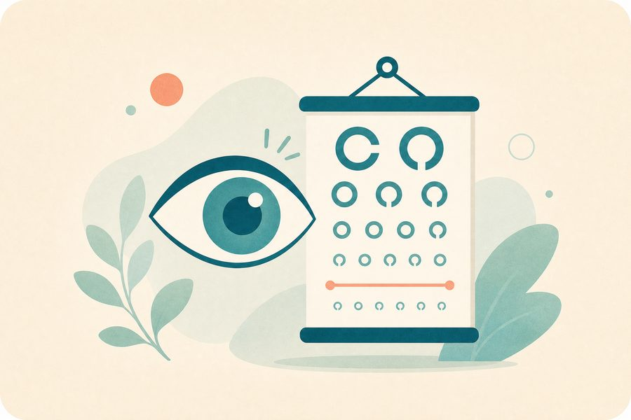

Approximate visual acuity test
Approximate on-screen indicator only; do not use it to prescribe glasses or rule out an eye problem.

When do you need a specialist eye exam?
Any sudden change in visual acuity, flashes, a curtain-like shadow, or severe pain requires urgent contact with an eye specialist. Difficulty reading or recurrent headaches also warrant a professional exam.
Frequently asked questions about the approximate visual acuity test
Brief answers to help you understand the tool's limitations and use it more wisely.
Is a phone vision test accurate?
It's an on-screen approximate test affected by device size, lighting, distance, and display settings, and it is not equivalent to a professional eye exam.
How can I get a more consistent reading?
Use appropriate lighting and a fixed distance, follow the instructions, and test each eye as directed without straining or repeated guessing.
When do I need an eye exam?
Schedule an exam for persistent vision problems, recurrent headaches, or the need to change glasses, even if the on-screen result seems reassuring.
When are eye symptoms an emergency?
Sudden vision loss, severe pain, or flashes with new floaters need urgent evaluation and should not be delayed because of this test.